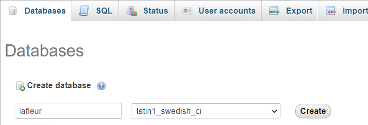

Si vous connaissez phpmyadmin (c'est celui qui sera en démonstration), lancez l'application ,
sinon utilisez votre application favorite ou les lignes de code.
Une fois phpmyadmin connecté, cliquez sur base pour créer la base lafleur
Résultat
Voici ce que vous obtenez en créant la base :
